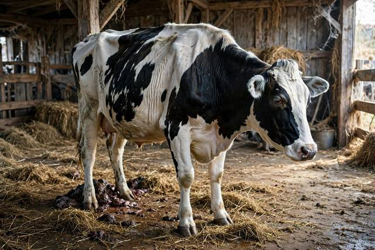
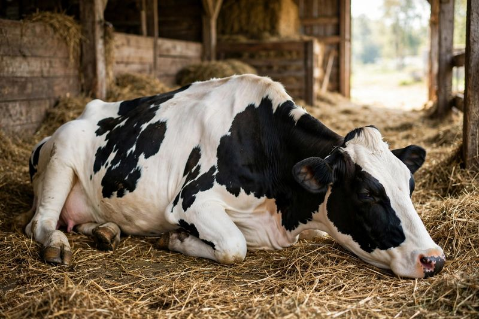
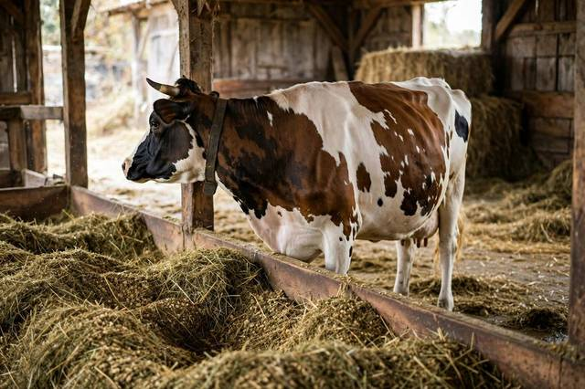
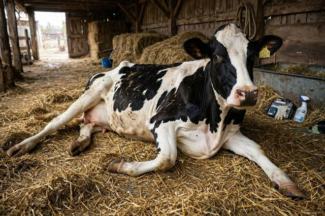

Milk fever is a metabolic disorder caused by low blood calcium, most often around calving when calcium demand rises sharply for colostrum and milk production.
This guide covers clinical signs, causes, diagnosis, treatment principles and prevention.
Clinical Signs
1
Muscle weakness(Weak muscles, unsteady on her feet)
2
Trembling(Fine muscle tremors, especially after calving)
3
Cold ears(Ears feel cold to the touch)
4
Reduced rumen movement(The rumen slows down or stops moving)
5
Difficulty standing(Struggles to get up or stay standing)
6
Recumbency(Cow goes down and cannot rise)
7
Unconsciousness and death(Severe cases may progress to unconsciousness and death)
Muscle weakness

Trembling

Cold ears

Reduced rumen movement

Difficulty standingCow down after calving, unable to standUnconsciousness and death in severe cases
Causes and Transmission
Risk is affected by age, parity, diet and calcium regulation during the transition period. Older high-producing cows are at increased risk, but any dairy cow may be affected.
Veterinary Diagnosis
Diagnosis is based on timing around calving and characteristic signs, supported by blood calcium measurement when available. Other causes of recumbency must be considered.
Treatment and Case Management
Calcium treatment must be administered using an appropriate product and route under veterinary guidance. Intravenous calcium requires careful administration and heart monitoring because rapid or excessive administration can be dangerous. Recumbent cows also need nursing care and assessment for concurrent problems.
When to seek urgent help: A cow unable to stand after calving needs urgent veterinary assessment; do not give intravenous calcium without training and veterinary direction.
Recommended Medicines
1
Mineral – Calcium borogluconate 23%(Restores blood calcium levels)500 ml IV slowly under veterinary supervision (adult cow)
2
Fluid therapy – IV fluids(Supports a recumbent cow while she recovers)As prescribed by a veterinarian
⚠ Important Tips:
A cow unable to stand after calving needs a vet immediately.
Never give intravenous calcium without training and veterinary direction — rapid administration can be dangerous.
Use calcium treatment only under veterinary guidance.
Give a down cow deep dry bedding and nursing care while the vet is on the way.
IV fluid therapy — vet-administeredInjection — vet-administered only
Prevention and Herd Management
Use a veterinarian-designed transition-cow ration, manage dietary cation-anion balance where appropriate, monitor high-risk cows and review mineral programmes before calving.
Frequently Asked Questions
What are the symptoms of milk fever in cows?
Muscle weakness, trembling, cold ears, reduced rumen movement, difficulty standing and recumbency. Severe cases may progress to unconsciousness and death.
What causes milk fever in dairy cows?
Milk fever is caused by low blood calcium, most often around calving when calcium demand rises sharply for colostrum and milk production. Older high-producing cows are at increased risk, but any dairy cow may be affected.
How is milk fever in cows diagnosed?
Diagnosis is based on timing around calving and characteristic signs, supported by blood calcium measurement when available. Other causes of recumbency must also be considered.
How is milk fever in cows treated?
Calcium treatment must be administered using an appropriate product and route under veterinary guidance. Intravenous calcium requires careful administration and heart monitoring, because rapid or excessive administration can be dangerous. A cow unable to stand after calving needs urgent veterinary assessment.
How can milk fever in dairy cows be prevented?
Use a veterinarian-designed transition-cow ration, manage dietary cation-anion balance where appropriate, monitor high-risk cows and review mineral programmes before calving.
How to treat milk fever in cow?
Calcium treatment must be administered using an appropriate product and route under veterinary guidance. Intravenous calcium requires careful administration and heart monitoring, because rapid or excessive administration can be dangerous.
Why is my cow down after calving?
A cow that cannot stand after calving may have milk fever, caused by low blood calcium when demand rises sharply for colostrum and milk. It needs urgent veterinary assessment, so do not give intravenous calcium without training and veterinary direction.
گائے میں دودھ کے بخار کا علاج کیا ہے؟
دودھ کا بخار خون میں کیلشیم کی کمی سے ہوتا ہے، اور کیلشیم کا علاج ویٹرنری ڈاکٹر کی نگرانی میں کیا جاتا ہے۔ نس میں کیلشیم دینا خطرناک ہو سکتا ہے، اس لیے بغیر تربیت اور ڈاکٹری ہدایت کے خود نہ دیں۔ بچہ دینے کے بعد کھڑی نہ ہونے والی گائے کا فوری معائنہ ضروری ہے۔
Key Takeaway
Early recognition, accurate diagnosis, responsible veterinary care and herd-level prevention are central to managing this condition. Follow current local veterinary authority guidance and medicine labels.